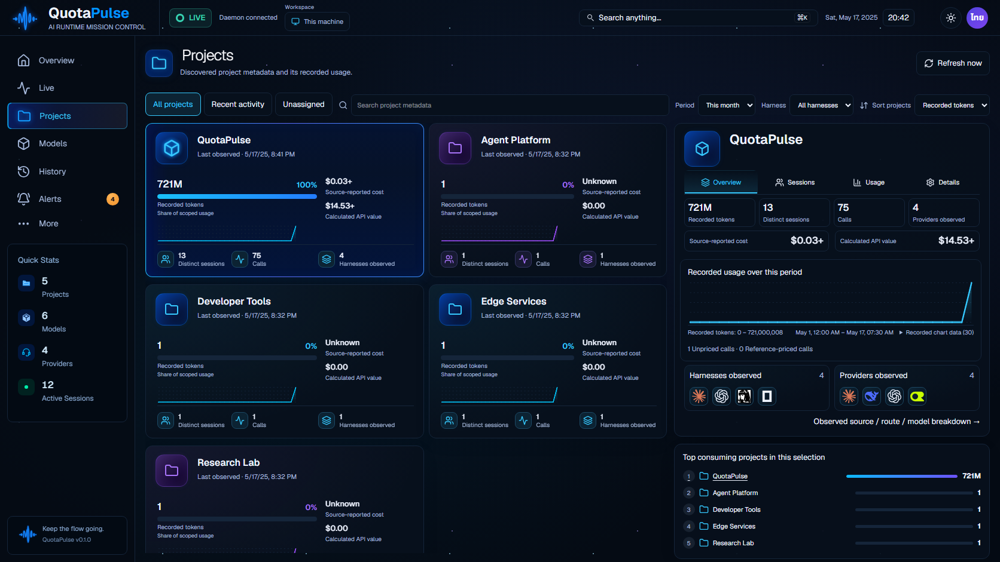
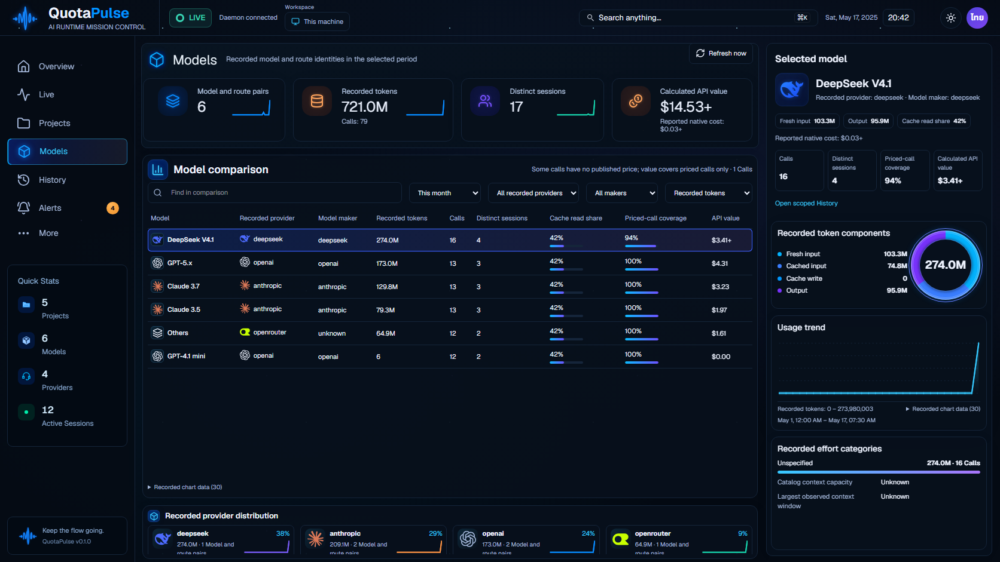
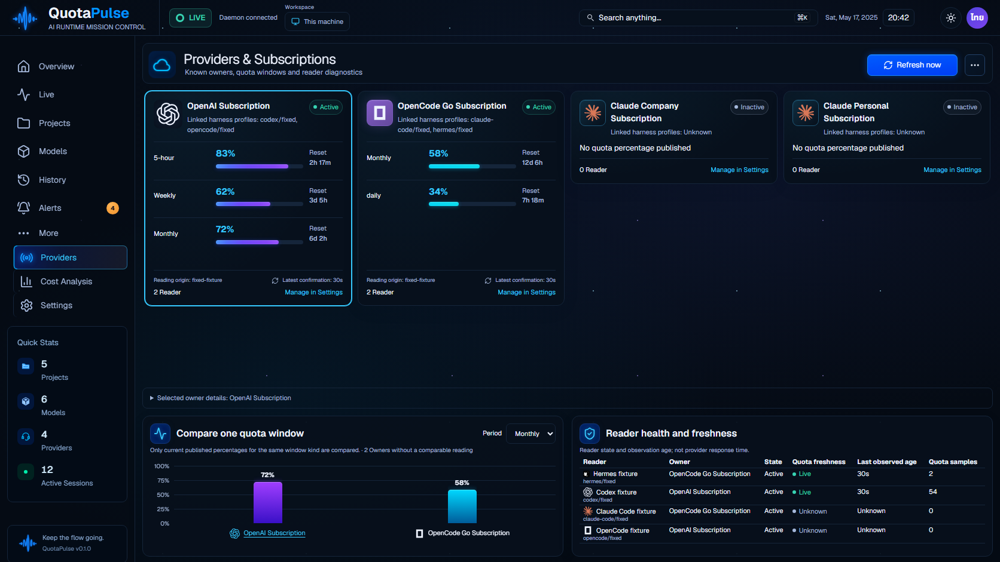

QuotaPulse v1.85.85: original / current Compiled application with synthetic records through the real API. Models summary and Projects observed lines updated; real refresh and bounded effort paging verified. All-eight Source acceptance remains open.
Partially validated: Models and Projects repeat gates failed; no whole-source acceptance. Remaining Source work | Native evidence limits
Validation and limitations | Source review
overview: original / current85 / previous84 Original concept Current85 actual API fixture Previous84 live: original / current85 / previous84 Original concept Current85 actual API fixture Previous84 projects: original / current85 / previous84 Original concept Current85 actual API fixture 
Previous84 models: original / current85 / previous84 Original concept Current85 actual API fixture 
Previous84 providers: original / current85 / previous84 Original concept Current85 actual API fixture 
Previous84 cost: original / current85 / previous84 Original concept Current85 actual API fixture Previous84 history: original / current85 / previous84 Original concept Current85 actual API fixture Previous84 alerts: original / current85 / previous84 Original concept Current85 actual API fixture Previous84